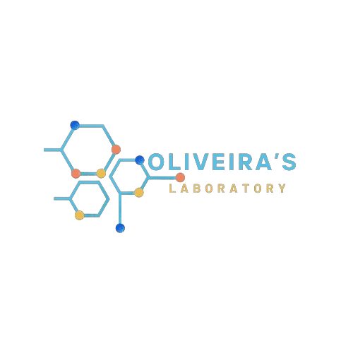

Resultados Laboratoriais
PACIENTE: Amanda Santana Gonçalves
SEXO: Feminino
IDADE: 35 anos
Clínica:Convênio Unimed/Jaú
DATA DA COLETA: 15/01/2023
HORA: 10:45
SEXAGEM FETAL
MATERIAL:Coleta de Sangue
MÉTODO: PCR( Reação em Cadeia de Polimerase) - Em tempo real Método in house
RESULTADO:
Foi observado sinal de amplificação do marcador do
cromossomo Y, sugerindo que o feto é do sexo masculino
METODOLOGIA: Jafé Automatizado
Laboratório de Análises Sanguíneas